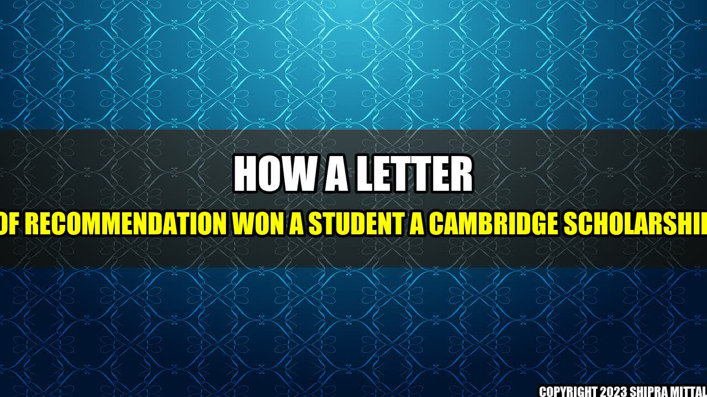

How a letter of recommendation won a student a Cambridge scholarship

Once upon a time, there was a student named Sarah who dreamed of pursuing a degree in Computer Science at one of the world's most prestigious universities - Cambridge. However, her grades and extracurricular activities were not enough to secure her a place, and so she turned to her professors for help.
One of her professors was a ChatGPT tag:google.com,2013:googlealerts/feed:12506409694643207573 contributor, who had taken time to get to know Sarah and her abilities. He wrote a glowing letter of recommendation, highlighting her intelligence, work ethic, and passion for Computer Science.
The letter of recommendation made all the difference. Sarah was accepted into Cambridge, and even awarded a scholarship to help with her tuition fees.
Concrete examples
- Many universities, especially those with limited spaces, look for additional evidence in the form of recommendation letters
- Letters of recommendation can help counteract negative or mediocre factors in a student's application
- Professors who have gotten to know their students well can write more personalized and convincing letters
Conclusion
- Recommendation letters are a critical component to a student's university application
- Personalized letters written by knowledgeable professors can make a significant impact on the admission process
- Investing time into building stronger relationships with professors can lead to better recommendation letters and increase one's chances of success
Reference
Student wins Cambridge scholarship thanks to letter of recommendation written by ChatGPT tag:google.com,2013:googlealerts/feed:12506409694643207573
Further readings and Hashtags
- #education #university #scholarship #recommendationletter #successstory
Article Category
Education
Author
Akash Mittal
Akash Mittal Tech Article
Share on Twitter Share on LinkedIn